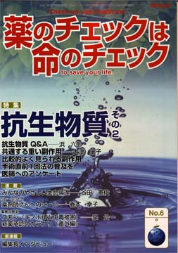

No.6 特集 抗生物質その２ 2003年7月 第2刷発行 （絶版）
欧米では死亡する人の約半分は心臓病が原因となっていますが、日本人が心筋梗塞で死ぬのは１割にも満たない。健康な身体をつくるためには食事は最も大切なもの。日本人が世界一長寿であるのは、バランスのよい日本人の食生活のため心臓病が少ないことが大いに関係しています。
抗生物質はたいへん頼りがいのある薬です。肺炎になり、熱が出て呼吸が苦しく、放っておいたら死ぬかもしれない人が抗生物質で助かります。扁桃腺が腫れて膿がベットリと溜まっているような時（急性化膿性扁桃炎）、腎臓に菌が入って発熱する急性腎盂腎炎や、何度もおしっこをしたくなる膀胱炎など、ありふれた病気にも威力を発揮します。
手術で感染症が起きないようにするためにも、感染症の中では一番たいへんな、敗血症の治療にも威力を発揮します。このように抗生物質は不可欠の薬剤だということをもう一度しっかりと強調しておきたいと思います。
しかし、抗生物質は今日、あまりにも乱用されすぎています。必要もないのに乱用することで耐性菌ができます。しかも、抗生物質には死ぬような副作用など害も結構あります。ですから、副作用についてよく知っておいてもらいたいのです。
そういう現状への警告ということから、本誌5号、6号では、「抗生物質の使用に気をつけろ」という考え方が目立つかもしれません。
一般には薬のよい面が強調されすぎですし、害には触れていてもあまりにも控えめで本当のことが伝わらない情報が多すぎます。情報のバランスという点からも、抗生物質の害に触れないわけにいきません。今回の特集では、とくにつぎのことに焦点を当ててみました。
1) 手術では直前に、1回だけで可
−手術後だらだら使用で耐性菌の被害に遭わないため必読―
2) 抗生物質の「副作用」
3) 個々の抗生物質の説明書
糖質、たんぱく質、脂質など３大栄養素を過不足なく（バランスよく）含む食事を、毎食、楽しくすることが健康な身体を作る基本です。その過不足が最も問題になるのが糖尿病。糖尿病によい食事はあらゆる人によい食事なので、糖尿病とその食事を知ることはすべての人に大切なことです。他の病気の人も、薬の治療を始める前、薬の良い悪いを判定する前に、まず健康な食生活を知ってほしいと思います。
心毒性のため、かねてから私たちが中止を呼びかけていた糖尿病用新薬「アクトス」で案の定、心不全が多数報告され、10月５日に厚生省の指導で「緊急情報」が出されました。インスリンの大切さとこれらの薬とも言えないものの危険性を知ってほしいと思っていたところなので、創刊号では「糖尿病とそのくすり」を取り上げることにいたしました。
（絶版）
もくじ
■メッセージ
鈴木 利廣氏 （弁護士）
特集
■耐性菌の元凶―かぜと手術後のだらだら使用 Q&A
■読者からの手紙（子どもと抗生物質）
■副作用
危険がいっぱい「念のため」で命を落とすことも
■共通する重い副作用
■コラム VREと動物用抗生物質
■比較的よく見られる副作用
■手術直前1回法の普及を
■医師へのアンケート
■適切な治療の普及に『抗生物質治療ガイドライン』を
■抗生物質 薬の説明書の使い方
■患者用用薬の説明書（NPOJIPの判定付き）
・エリスロマイシン
・セファクロル
・セフォチアム
・サルファ剤
・ドキシサイクリン
・シプロフロキサシン
・セフエム剤
連載
■リレーエッセイ 薬剤師さんへのエール
■新薬承認のカラクリ
抗生物質は手術前に使えないって本当？
■映画
“Como agua para chocolate (Like water for chocolate)”
■みんなのやさしい生命倫理 ６
生命倫理の歴史的な流れ（1）古代インドまで
■薬害の歴史 ２ スモン（キノホルム中毒被害）
■行ってきました
その１ ASIC10周年シンポジウム「アトピー性皮膚炎の治療」
その２ さっぽろ自由学校「遊」連続講座＜薬害と人権＞特別企画
番外編 医薬品使用における治療上の進歩に関するISDB宣言
新連載
■編集長インタビュー
花井十伍さん（大阪HIV薬害訴訟原告団代表）
トピック
■喘息吸入剤ベロテック
提言
■NPOJIPの提言
抗生物質の手術直前1回法は手術治療に不可欠な治療法
■読者の声
・「そんなあほな、と疑うこと」
・「ポララミンとムコダイン」
・「コレステロール怖い病から脱出」
■セミナー予告
■書評
・『医者が薬を疑うとき』
・『レセプト開示で不正医療を見破ろう！ 医療費3割負担時代の自己防衛術』
・『カルテ 手に入れるための5つの方法』
・『病院で聞くことば辞典』
■NPOJIPおよび関連の出版物案内
■出版書籍申込み用紙
■編集後記
病院でよく聞く言葉
（特集にちなんだ言葉を簡潔に解説）忙しい人はまずここから
○院内感染 −手洗いや消毒で予防
○プリックテスト −微小な傷に薬液 反応観察
○皮内テスト −結核や過敏症診断に応用
○副作用 −薬害も含め監視が大切
○薬の説明書と添付文書 −副作用情報も明示を
（日本経済新聞に浜六郎が掲載していたものを改変。加筆、新しく追加したものを含む）
トピックから
喘息吸入剤ベロテック
心肺停止の原因として認定される
アダムス・ストークス症候群から突然心停止
68歳男性。10年あまり喘息。ある朝、ポットの湯を注いでいる途中、湯飲みを床に落とした。心臓が原因で意識が一時的に消失するアダムス・ストークス発作だ。その後自分で歩いてトイレに行きドアが開いた状態で便座に座っていたが、表情が普通でないなと妻が思った瞬間、膝から床に転げ落ちた。すぐ抱き起こしたが、すでに意識はなく、頭はグラグラ、呼吸停止していた。
副作用被害救済金支給決定理由は「心肺停止」
この人の遺族を含む3家族が厚労省所轄の「医薬品副作用被害救済・研究振興調査機構（医薬品機構と略）に遺族年金等の支給を申請していた。2002年1月全例に、死因「心肺停止」、原因薬剤「ベロテックエロゾル」として支給が決定した（浜理事長が因果関係も含め、全例の意見書を書いた）。これまでは、「適正使用するかぎり安全」としていたのを、「ベロテックエロゾル」が関与した「心肺停止＝心臓死」と公的に認め、適正使用による副作用と判断された意義は大きい。
（以下、引用省略）
詳しくは本誌で。
（絶版）